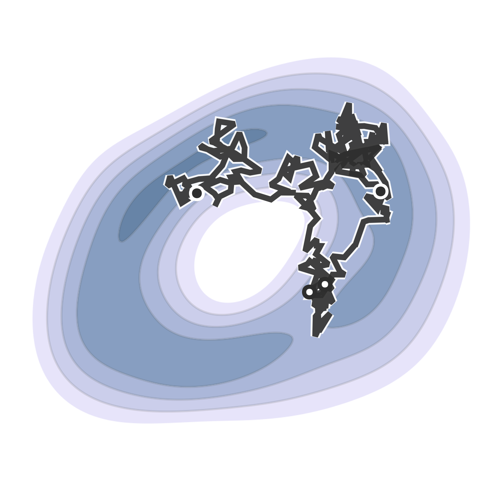
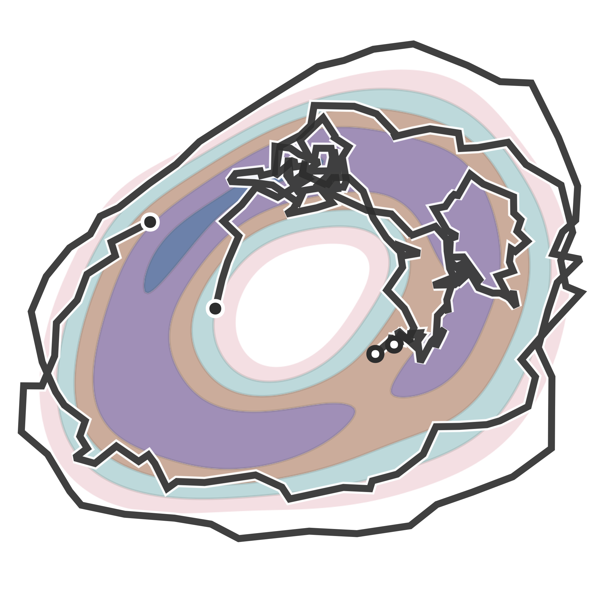
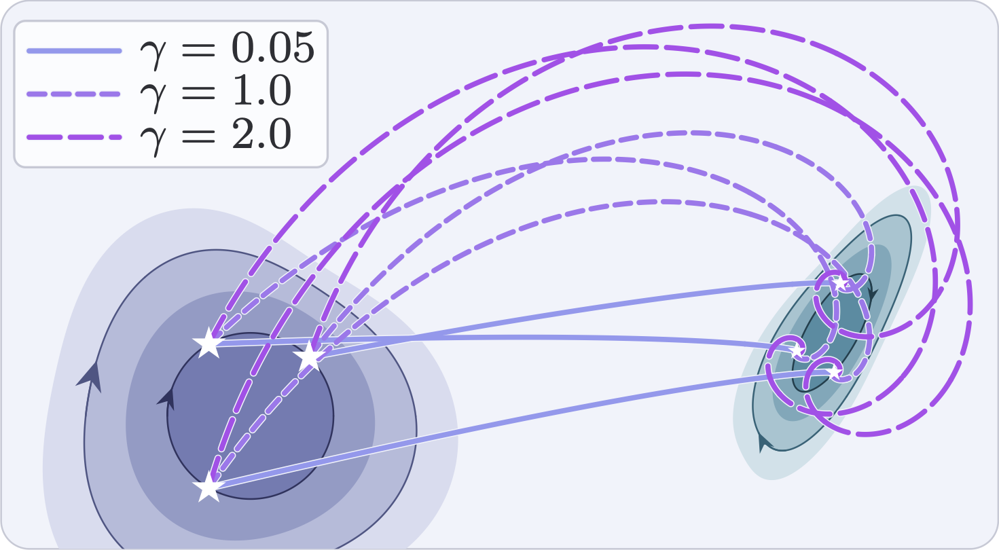
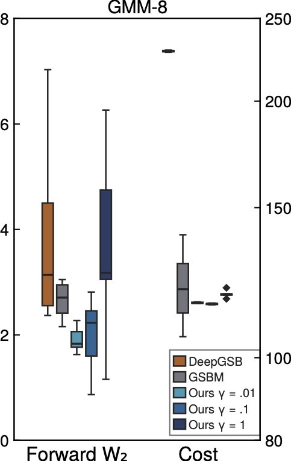

Diffusion bridges have emerged as versatile frameworks for facilitating transformations between arbitrary data distributions. However, these approaches are hindered by an immense optimization space and its underlying high-order structures. This paper explores a variant of diffusion bridges for solving real-world problems in complex vector spaces governed by scaling and rotation laws, such as Hamiltonian structures. To address this, we introduce conformal optimal transport (COT), a complex-valued transportation framework designed for physical systems with geometric and dissipative dynamics under a geometric lifting. Building on this, we propose a new class of dynamical diffusion bridges, called complex Schrödinger bridges (CSBs), whose derived algorithms can handle diffusion-based tasks using a conformal geometric prior. For scalability, we propose image-to-image CSB (I2CSB), a tractable diffusion-bridge technique with an analytic spiral posterior. Finally, we implement a physics-informed CSB algorithm within simulations of quantum electrodynamics, mimicking the logical behavior of quantum logic gates. Our extensive results validate the underlying theory while highlighting advantages of complex-valued diffusion.
CSB is a complex-valued formulation of the Schrödinger bridge problem tailored to physical systems with geometric and dissipative dynamics. Formulating the problem in terms of conformal optimal transport (COT) naturally captures the interplay between Langevin diffusion and Hamiltonian rotational motion. We introduce image-to-image CSB (I2CSB), a tractable diffusion-bridge method with an analytic spiral posterior, and demonstrate its effectiveness across medical imaging and circuit quantum electrodynamics simulations.
CSB presents high-order diffusion and phase dynamics through an complex-valued SDE formulation. The CSB-PDE system yields an SB-CVSDE description of forward and backward stochastic evolution, with neural networks learning the complex potentials through iterative proportional fitting.


For known boundary pairs, I2CSB admits an analytic complex Gaussian posterior whose mean follows logarithmic spirals. This tractable formulation supports score-based learning and DDPM-style generation for high-dimensional image translation and matching.


@inproceedings{han2026complex,
title = {Complex Schrödinger Bridges},
author = {Han, Dong-Sig and Birdal, Tolga},
booktitle = {Advances in Neural Information Processing Systems},
year = {2026}
}